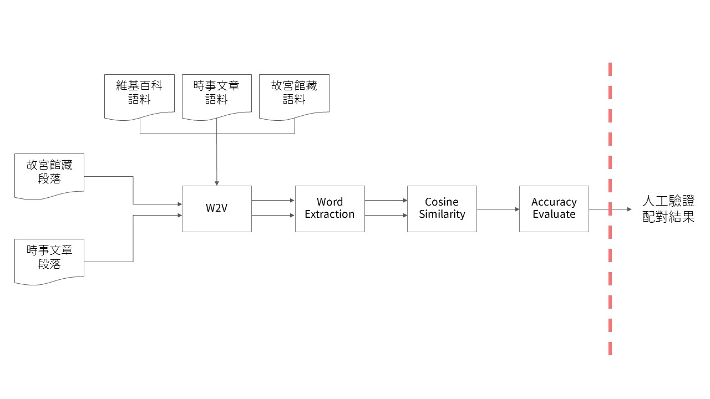

實作
模型圖

收集語料與斷詞處理
使用BeautifulSoup抓取並解析網頁資料。在本專題中，故宮館藏資料來自「器物典藏資料檢索系統」以及 「書畫典藏資料檢索系統」，而時事文章則來自「關鍵評論網」以及 「every little d」。收集完語料後，接著使用Jieba進行中文斷詞處理。
Word Embedding － 使用Word2Vec
使用Word2Vec作為Word Embedding之模型，以「故宮館藏」、「時事文章」、「維基百科」作為語料進行訓練。
Word Extraction － 使用TF-IDF
在本專題中，使用了Jieba內基於TF-IDF的關鍵詞抽取，為每一個作為輸入的「故宮館藏之敘述」以及「網路時事文章段落」進行關鍵詞抽取，並計算這些關鍵詞的平均詞向量，以便後續處理。
Cosine Similarity 計算
為每一筆「故宮館藏文章之敘述」與「網路時事文章段落」之平均詞向量計算Cosine Similarity，得出故宮館藏與時事文章的配對。
Accuracy Evaluate
引用Unsupervise Similarity Accuracy Evaluation為得出的配對進行算分，並以百分制為單位。
人工驗證配對結果
將分數五十分以上的配對篩選出來，進行進階的人工篩選，找出文物敘述與文章彼此間，同質性、相似性高且頻繁出現的詞彙，評估文章與文物的詞彙，是否能建立一定程度的關聯性，足夠直觀且易於理解。